Go Home
Site Map
Go Home
Site Map
Wipe Where?
Wiper Arm removing
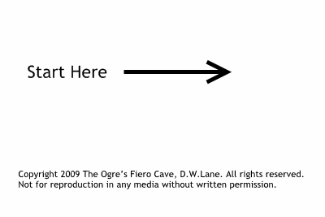
Wiper transmission
Remove:
- The Wiper Arms.
- The Washer sprayers and tube.
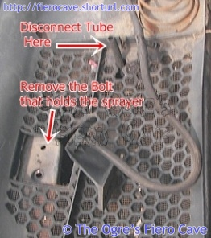
- The Trim. 87+ uses separate "Christmas trees" but 86 and older uses trim with built-in ones and likely will break off.
(If you have sun roof option the remove the three screws that holds storage tray.)
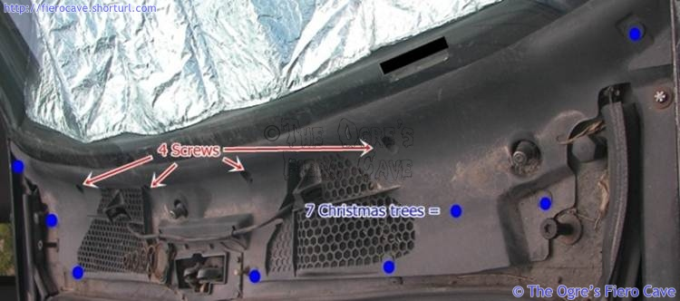
- Disconnect the motor by loosening two small nuts to let ball joint separate.
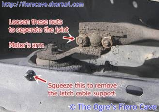
- Remove "jam" switch. (It activates Ajar light if it's working.)
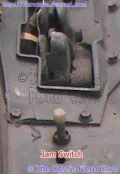
- Using permanent marker or paint, Mark the edge of the big washers that hold the hood latch and Remove the latch bolts. (Saves you guessing when you put them back later...)
- Remove 1 bolt that holds latch cable to the latch.
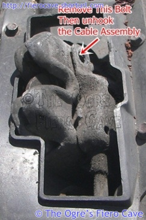
- Remove the latch and cable.
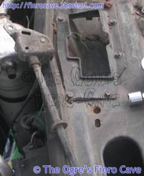
- Remove the bolts, 3 each, that holds the pivots.
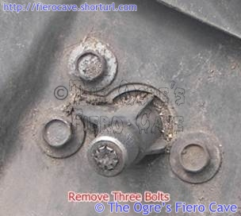
Now it gets fun... You need some patients and acrobat hands
Carefully move the assembly right until right pivot and plastic part (see the final image) clears intake area to AC/heater box. Carefully because you need to reach thru the latch hole and dig up the right pivot. Pivot will clear the hole without any cutting etc.
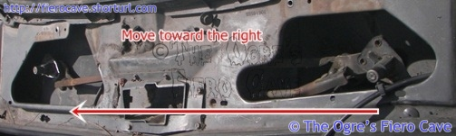
Move whole thing forward, where latch and switch lived.
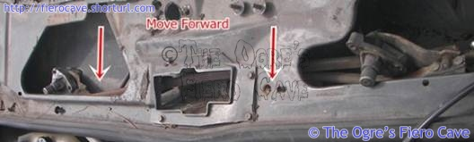
Move to left and up to clear the body.
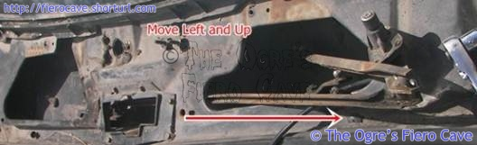
Finish. (The small plastic piece gets caught on things.)
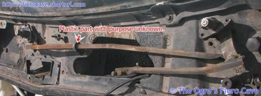
Just reverse the steps to install another one.
Install Notes
Before connecting the motors arm to the transmission, take apart joint clean and grease it. Using grease that won't wash off.
Washer Fluid Check Valve
This part will fail when the fluid freezes.
Many use water to fill the tank and don't empty the tank before adding fluid for Cold weather. Fluid can get weak from storing the car.
Washer will run just fine but w/o check valve, you will see a delay before the sprayers do anything and meanwhile wipers are wiping dry glass.
The valve (GM Part # 25523494) have/had two parts inside... If the valve splits apart then you're likely missing both pieces. If you pull spare tire then the parts are likely there. You can just put parts back together, test, then glue the seam when the test is good. Test is easy blow air thru on gray part, other way nothing.
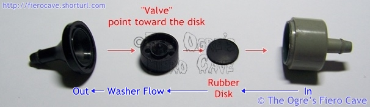